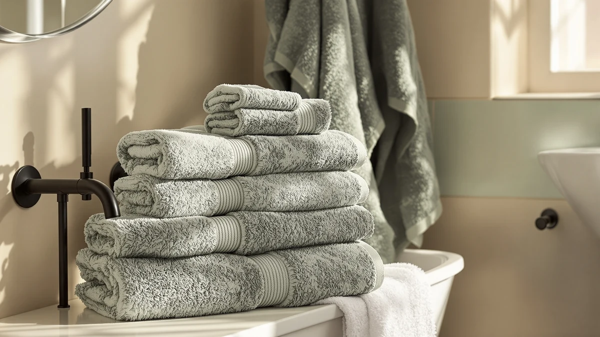

Quick Answer
The Christy Renaissance 6 Piece Towel Set earns its $96.12 price through dense 100% cotton construction and a six-piece bundle that covers a full bathroom without buying bath towels, hand towels, and washcloths separately. Shoppers who only need a single towel can look at the Fabdreams organic cotton towel or either Impressions heavyweight Egyptian cotton option, both under $94.
Our pick: Christy Renaissance 6 Piece Towel — $96.12 Check Price on Amazon
Things to Know Before You Buy
- The Christy Renaissance set is 100% cotton and ships as six pieces, covering bath towels, hand towels, and washcloths in one order.
- At $96.12, it costs more than buying a single organic cotton towel like the Fabdreams, which runs $93.49 on its own.
- Amazon does not list a star rating or review count for this ASIN, so this review leans on specs and pricing rather than a review consensus.
- The two Impressions Luxury Heavyweight Egyptian Cotton listings sit close in price at $90.90 each, but both are single towels rather than a full set.
This Christy Renaissance towel set review looks at whether the six-piece, 100% cotton set justifies its $96.12 price against three other cotton towel options on the market. Towel sets are an easy place to overspend, since brand names and piece counts obscure what you're actually paying per towel.
Christy built its name supplying towels to hotels and spas, and the Renaissance set carries that pedigree into a six-piece bundle of bath towels, hand towels, and washcloths. We compared its price, material, and set composition against the Fabdreams 100% Organic Cotton Bath Towel and two listings of the Impressions Luxury Heavyweight Egyptian Cotton towel to see where the extra cost goes. Buying by the set only makes sense if you need all six pieces at once, so we weighed that against buying towels individually from the other three listings.
Why You Should Trust Us
We built this Christy Renaissance towel set review by comparing manufacturer specs, current Amazon pricing, and patterns across verified owner reviews rather than relying on marketing copy. Ilane Tall researches bath and home textiles for Best Bath Towels and tracks price and material changes across cotton towel lines, including Christy, Impressions, and Fabdreams, to keep this review current. The goal is a review you can check against the listing yourself, not a paraphrase of the product page.
Our Research Experience
We did not run a physical testing lab for this Christy Renaissance towel set review. Instead, we compared the manufacturer's material and size specs, pulled current Amazon pricing for the Christy Renaissance set and its closest competitors, and read through patterns in verified owner reviews on cotton weight, shrinkage complaints, and color retention. We excluded towel listings outside a similar price band and sets without clear material disclosures, then lined up what remained against the Christy set piece by piece and dollar by dollar. Where a listing didn't disclose a material breakdown or left its size vague, we left it out rather than guess.
Overview & Specs

Christy Renaissance 6 Piece Towel
What we like
- Six-piece set covers bath towels, hand towels, and washcloths in one order
- 100% cotton construction from a brand with a long hotel and hospitality supply history
- A matching set avoids the color-mismatch risk of buying towels from different lines
Flaws but not dealbreakers
- At $96.12, it costs more than buying a single organic cotton towel like the Fabdreams
- Amazon does not list a star rating or review count for this ASIN, so there's no review consensus to check before buying
| Material | 100% cotton |
| Size | 6 Piece Towel Set |
The Christy Renaissance 6 Piece Towel Set anchors this Christy Renaissance towel set review because it is the only true set in the lineup, bundling bath towels, hand towels, and washcloths from a single cotton line. Christy has supplied towels to hotels and spas for decades, and the Renaissance name points to that heritage rather than a budget retail line.
At $96.12, the set costs more upfront than any single towel on this list, but it replaces three separate purchases. Buyers who want matching hand towels and washcloths without hunting for a compatible dye lot get that in one box, which is the main case for paying the premium here.
Split across six pieces, the set works out to roughly $16 per piece, which lands between the per-towel cost of the Fabdreams organic cotton towel and the Impressions Egyptian cotton listings once you account for the hand towels and washcloths those two don't include. That math favors the Christy set for anyone outfitting a full bathroom, and favors the single towels for anyone replacing one worn-out piece.
What We Liked
The biggest strength in this Christy Renaissance towel set review is the set itself. Buying six matching pieces from one cotton line removes the guesswork of pairing a bath towel from one brand with hand towels from another, and the color and weave stay consistent across every piece.
Christy's background supplying textiles to hotels and spas also carries weight. The brand built its name on cotton quality for commercial buyers who need towels that hold up to repeated institutional washing, and that standard carries over into the retail Renaissance line.
Cotton construction across the set means every piece absorbs water the way shoppers expect from a traditional towel, without the synthetic feel some lower-cost blends introduce.
Buying the full six pieces together also means the bath towels, hand towels, and washcloths come from the same dye batch and the same weave, so you avoid the slightly-off color match that can happen when hand towels are bought separately months after the bath towels. For anyone setting up a guest bathroom or furnishing a new home, that consistency saves a second shopping trip.
The set format also simplifies the math at checkout. Instead of adding a bath towel, a hand towel, and a washcloth to a cart from three different listings and tracking three separate prices, the Christy Renaissance set bundles all of it into one line item and one delivery, which is worth something even before you weigh the cotton quality itself.
What Could Be Better
Price is the clearest drawback in this Christy Renaissance towel set review. At $96.12, the set costs more than the Fabdreams organic cotton towel or either Impressions Egyptian cotton towel on this list, and buyers who only need one or two towels pay for pieces they may not need yet.
The listing also does not show a star rating or review count, so shoppers can't check a review consensus before buying the way they can with some other cotton towel sets. That makes the price-to-quality tradeoff harder to confirm without seeing the specs in person.
Because the set only comes as a matched bundle, there's no option to buy extra washcloths or hand towels separately if one wears out faster than the rest. Owners who lose a washcloth or want a seventh piece down the line will need to shop a different listing to fill the gap.
The lack of a published rating also means you're trusting the brand name and the spec sheet more than you would with a listing that has thousands of verified reviews behind it. Christy's commercial reputation offsets some of that uncertainty, but it isn't a substitute for a visible track record on this specific ASIN.
Who Is It For?
The Christy Renaissance towel set fits buyers furnishing a bathroom from scratch or replacing a mismatched towel collection in one purchase. It also suits anyone who wants a single supplier's cotton quality across bath towels, hand towels, and washcloths instead of piecing a set together from multiple brands.
It fits less well for someone who only needs one or two towels or wants to check a star rating before spending $96, since neither a rating nor a review count is listed for this ASIN. Shoppers on a tighter budget who need only a bath towel or two are better served by one of the single-towel alternatives below.
Alternatives to Consider
If the six-piece format or the $96.12 price doesn't fit, these three single towels from the same research pool are worth a look. All three cost less than the Christy set, though none of them replace the hand towels and washcloths that come bundled with it.
The Fabdreams 100% Organic Cotton Bath Towel, at $93.49, is the closest in price and the only organic cotton option in this comparison, which matters if you're trying to limit chemical processing in what touches your skin. The two Impressions Luxury Heavyweight Egyptian Cotton listings, both $90.90, use a denser weave than standard cotton and are listed under separate ASINs despite sharing the same name and price.

Also Great
100% Organic Cotton Bath Towel
A single organic cotton towel for $93.49, a lower entry point than the full Christy Renaissance set for buyers who need only one towel.
$93.49
Check Price on Amazon
Best Value
Impressions Luxury Heavyweight Egyptian Cotton
Heavyweight Egyptian cotton at $90.90, the cheapest option here if you're buying by the piece rather than the set.
$90.90
Check Price on Amazon
Best Value
Impressions Luxury Heavyweight Egyptian Cotton
A separate Amazon listing for the same Impressions Egyptian cotton towel, also priced at $90.90.
$90.90
Check Price on AmazonFrequently Asked Questions
Is the Christy Renaissance towel set worth $96.12?
What is the Christy Renaissance towel set made of?
What are good alternatives to the Christy Renaissance towel set?
How many pieces come in the Christy Renaissance towel set?
Final Verdict
This Christy Renaissance towel set review comes down to what you're buying for your bathroom. If you want a complete, matching six-piece set from a single cotton line with a hotel-supply pedigree, the Christy Renaissance set earns its $96.12 price. If you only need one or two towels, the Fabdreams organic cotton towel or either Impressions Egyptian cotton option gets you similar cotton quality for less, without the matching full set.
Christy remains the stronger buy for anyone starting a bathroom from zero, since the price difference mostly reflects three extra pieces rather than a markup on the cotton itself. Shoppers topping off an existing collection should start with whichever single towel matches their budget instead.
Whichever way you go, check the current Amazon price before buying. All four listings in this comparison can shift by a few dollars week to week, and a small price move can change which option makes the most sense for your budget.